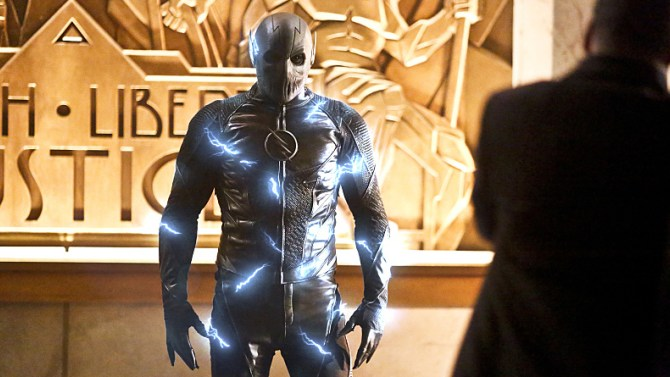
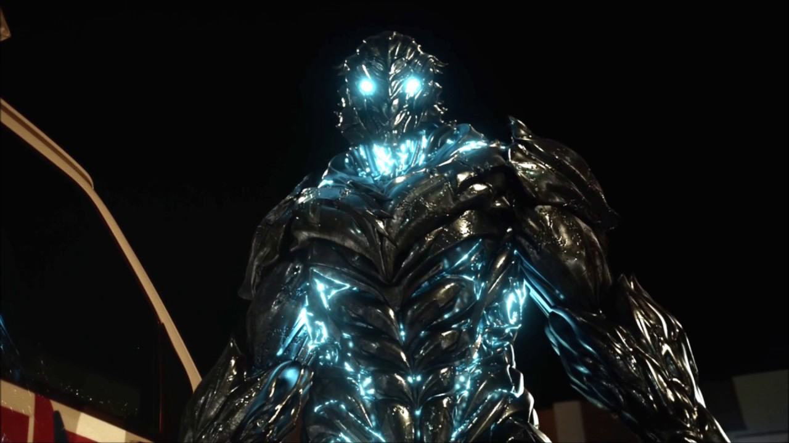
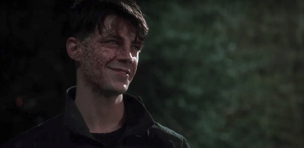

Professor Eobard Thawne was a meta-human speedster from the 22nd century, a descendant of Eddie Thawne, a time criminal, and the archenemy of Barry Allen/The Flash as well as an enemy of the Legends. Obsessed with the 21st century's Flash, Eobard recreated the accident that gave the Flash his powers and became a speedster himself.
Zoom

Hunter Zolomon was a meta-human speedster from Earth Two. Years after witnessing his father murder his mother when he was a child, Hunter became a serial killer. Following the S.T.A.R. Labs particle accelerator explosion, Hunter was affected during electroshock therapy by the dark matter emitted, giving him superhuman speed and various other abilities derived from it.
Savitar

Bartholomew Henry "Barry" Allen was a time remnant of the original Barry Allen that became a powerful armored speedster known as Savitar. Self-named after the Hindu God of Motion, he proclaims himself to be the "God of Speed" and the "ruler" of the Speed Force as well as the Future Flash, being the fastest known speedster in the Multiverse.
Savitar/Barry Allen

The Barry Allen time remnant was severly injured at some point.